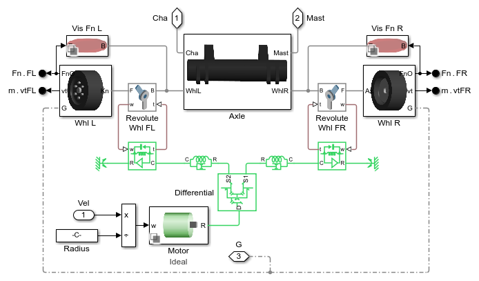
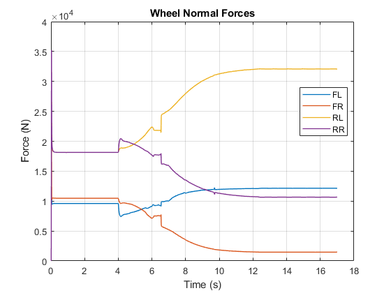
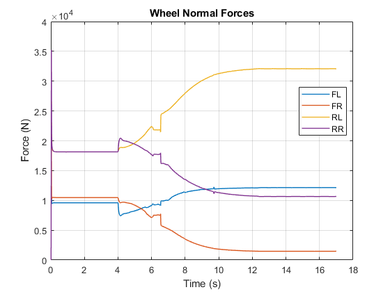
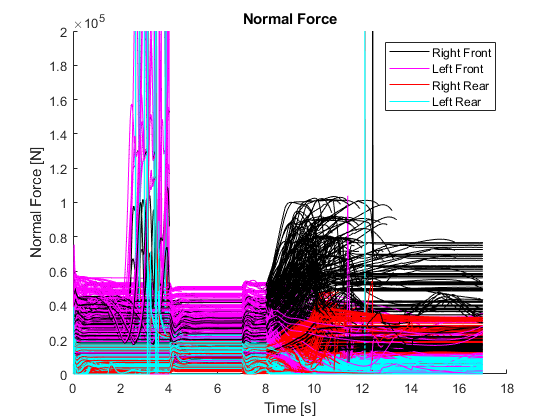
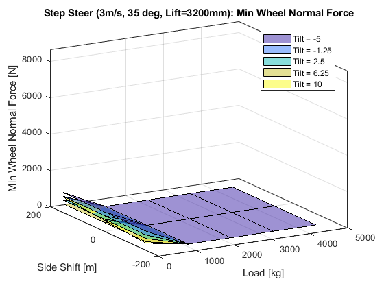
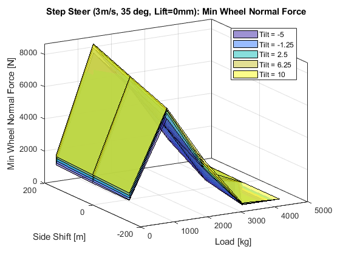

Forklift Stability Model
This example models a forklift with three-stage mast. You can use this model to perform stability analyses by sweeping design parameters and test conditions. The mechanical model of the lift was created in CAD software and imported into Simscape Multibody.
- CAD geometry is imported to ensure accurate representation of masses, inertias, and joint locations.
- Mechanical effects are incorporated into the design, including ground contact and cables in the lift mast
- Stability analyses are performed by sweeping design parameters in a range of test test scenarios
- Actuator requirements are refined using dynamic simulation with abstract actuator models
- MATLAB Apps enables rapid test configuration
Contents
- Model
- Forklift Model
- Mast Model
- Rear Model with Steering
- Front Model with Steering
- Simulation Results from Simscape Logging, Constant Radius Test
- Simulation Results from Simscape Logging, Step Steer
- Simulation Results from Simscape Logging, Step Steer Animation
- Simulation Results from Simscape Logging, Step Steer Sweep
Model
Forklift Model
The chassis, front and rear axles, and mast are modeled in this subsystem.
Mast Model
This subsystem models the mast and carriage.
Rear Model with Steering
This subsystem models the rear axle with steering.
Front Model with Steering
This subsystem models the front axle with driven wheels.
Simulation Results from Simscape Logging, Constant Radius Test
The plot below shows the wheel speeds and forklift position during the maneuver.
 
 Simulation Results from Simscape Logging, Step Steer
The plot below shows the wheel speeds and forklift position during the maneuver.
Simulation Results from Simscape Logging, Step Steer Animation
This animation shows how the forklift can tip under certain test conditions.
Simulation Results from Simscape Logging, Step Steer Sweep
The heatmap below shows the relative stability of the forklift under varying test conditions during a step steer.
- The value in the heat map is the minimum wheel normal force at the end of the test. Each individual heat map varies the amount of load and side shift position of the forks.
- From left to right, each individual heat map shows the results with increasing forward mast tilt
- From bottom to top, each individual heamp shows the results with increasing mast height
The results show the worst case condition occurs at maximum forward tilt, maximum mast height.
Starting parallel pool (parpool) using the 'Processes' profile ...
Preserving jobs with IDs: 1 because they contain crash dump files.
You can use 'delete(myCluster.Jobs)' to remove all jobs created with profile Processes. To create 'myCluster' use 'myCluster = parcluster('Processes')'.
Connected to parallel pool with 4 workers.
  